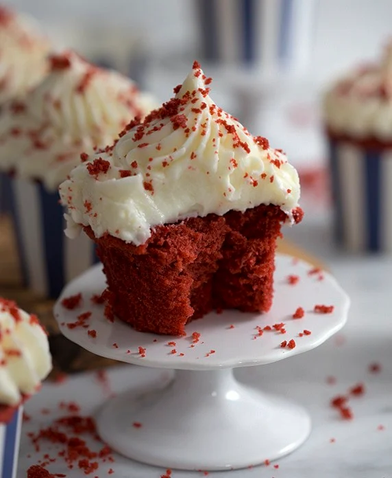

Relish in Red Velvet

Description
These red velvet cupcakes are moist and fluffy and topped with the perfect amount of
cream cheese frosting.
Great at any dinner party or birthday, these are sure to make
a statement at your next gathering!
Ingredients
Cupcakes
- AP Flour (215g)
- Cocoa Powder (5g)
- Granulated Sugar (200g)
- Baking Soda (1g)
- Baking Powder (4g)
- Salt (1g)
- Unsalted Butter (170g)
- Eggs (3 whole)
- Vanilla Extract (2 Tbsp)
- Buttermilk (175g)
- Red food coloring
Note: If you don't have buttermilk stir 1 Tbsp of white vinegar or lemon juice
into 1 cup of whole milk and let sit for about 5 minutes to thicken.
Cream Cheese Frosting
- Unsalted Butter, room temperature (340g)
- Powdered Sugar (550g)
- Cream Cheese (455g)
- Vanilla Extract (1 tsp)
- Salt (1 pinch)
Steps
Cupcakes
- Preaheat the Oven
Preheat the oven to 350°F and place cupcake paper liners in the cupcake pan.
- Mix Dry Ingredients
Combine the flour, cocoa powder, sugar, baking soda, baking powder and salt to the bowl
of a stand mixer.
Fit the mixer with a paddle attachment and mix on low speed adding
the butter a tbsp at a time until a sandy mixture forms.
- Mix Wet Ingredients
In a separate bowl, whisk together the eggs, buttermilk, vanilla and food coloring.
- Combine Wet and Dry Ingredients
Slowly add the wet ingredients to the dry ingredients while mixing on low and mix until just
combined, scraping the bowl as needed.
- Bake
Distribute the batter evenly into the cupcake papers and bake at 350°F for 15-20 minutes until
a toothpick inserted in the middle of
the cupcake comes out clean.
Cream Cheese Frosting:
- Cream the Butter
In the bowl of a stand mixer fitted with a paddle attachment, cream the butter and cream cheese
together on medium speed until
light and fluffy, about 5 minutes.
- Add Powdered Sugar
Reduce speed to low and add powdered sugar 1 cup at a time and mix until combined.
- Transfer to Piping Bag and Pipe
Scrape down the bowl and add to a piping bag fitted with the tip of your choice (I like a star tip).
Wait for the cupcakes to cool and pipe the frosting.